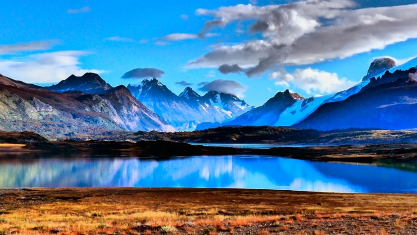
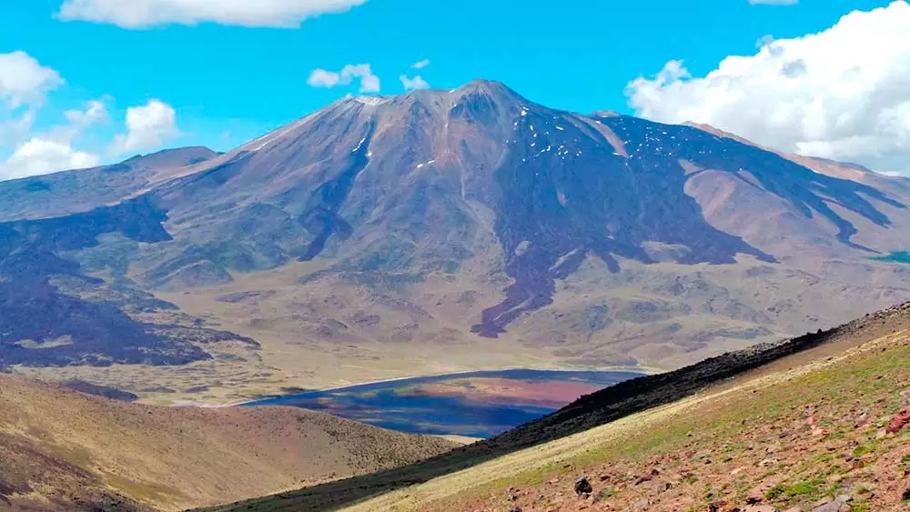
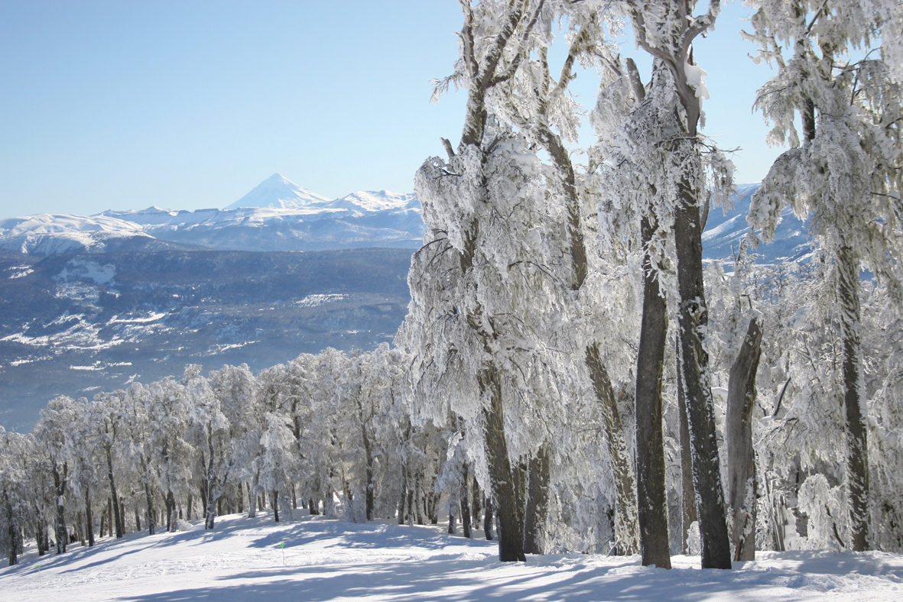

El Domuyo es un estratovolcán cuya altura es de 4704 msnm, de la que nace la Cordillera del Viento, en el norte de la provincia patagónica de Neuquén, en el sudoeste de la Argentina. Con una altura de 4707 msnm es la montaña más alta de la Patagonia. Su nombre es de origen mapuche y significa que tiembla y rezonga, debido probablemente a su actividad geotermal. El área de turismo del Neuquén, habitualmente lo cataloga como un «cerro con actividad volcánica y entorno de manifestaciones termales», al no poseer estructura de volcán, pues carece de chimenea central. Es recomendable tener preparación física y técnica para intentar su ascensión. Desde su imponente altura es posible apreciar la Cordillera Sur de la provincia de Mendoza, el noroeste neuquino y el vecino país de Chile, y volcanes como el Copahue, Antuco, Sierra Velluda, Nevados de Chillán, Tromen y los cerros Campanario y Sierra Nevada.
Batea Mahuida es un volcán extinto ubicado en el límite entre Argentina y Chile. Debe su nombre al hecho de que es una meseta con forma de "batea" invertida; y "mahuida" (originalmente "mawida"), que significa montaña en mapudungun, lenguaje del pueblo mapuche. En síntesis: "montaña con forma de batea". Está localizado en el Departamento Aluminé, en la provincia de Neuquén en el lado argentino, a 370 km de la ciudad capital, Neuquén y en la provincia de Malleco en la IX Región de la Araucanía en el lado chileno, a 135 km de la ciudad capital regional, Temuco. En su centro hay una laguna y desde la cumbre la cual se halla a 1.948 msnm se pueden ver los volcanes chilenos Sierra Velluda, Callaqui y Copahue (ubicados en la región del Biobio y el tercero compartido con Argentina, en la Provincia de Neuquén), y los volcanes Villarrica, Llaima, Lonquimay, Sierra Nevada y Lanín (de la región de la Araucanía y el último compartido con Argentina, en la provincia de Neuquén). También se pueden observar los lagos y lagunas cercanas, como el Moquehue y el Aluminé en Argentina y Galletué e Icalma en Chile.
El cerro Bayo es una montaña de la cordillera de los Andes ubicada en el sudoeste de la provincia del Neuquén, Argentina. Se encuentra a 9 km al noreste de la ciudad de Villa La Angostura, dentro de una zona donde predominan los lagos glaciares y la vegetación natural del bosque patagónico. La base tiene una altitud de 1050 m, y su mayor elevación es de 1782 msnm. Las condiciones climáticas son frías y húmedas, pero muy apacibles, debido a la protección que ofrecen los cerros circundantes y la moderación que otorga la enorme cuenca lacustre cercana. Las temperaturas mínimas de junio se acercan a los -4ºC y las máximas de octubre están alrededor de los 11 °C.
l cerro Pantojo cuya altura es de 2024 msnm, también denominado Pantoja, es un estratovolcán extinto que se encuentra en el límite entre la provincia del Neuquén, Argentina y la Región de Los Lagos, Chile. Se encuentra a pocos km al sur del Paso internacional Cardenal Samoré. Su forma característica es un cuello volcánico erosionado.